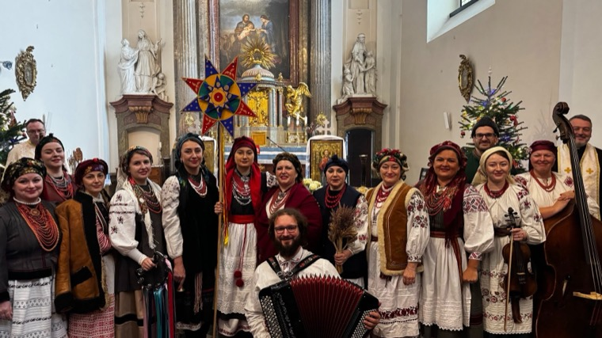
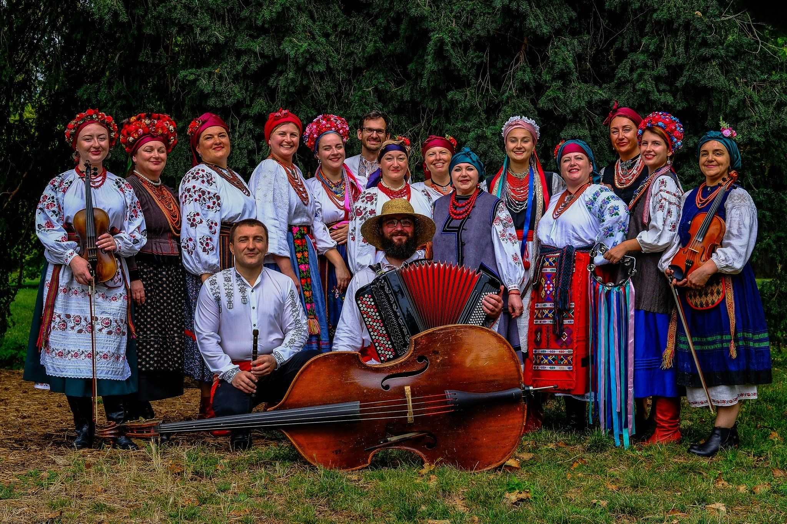
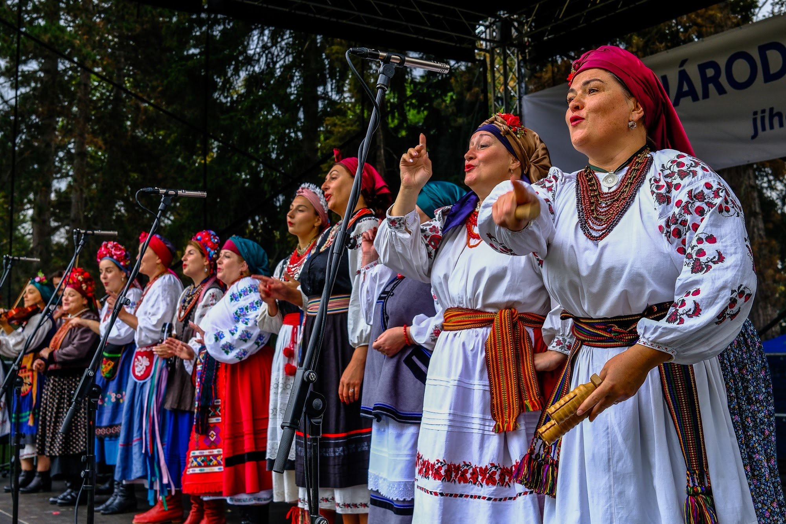
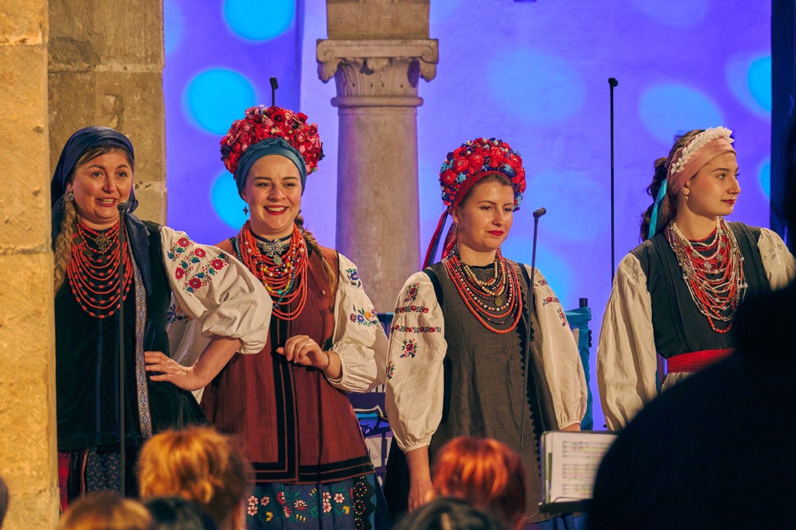
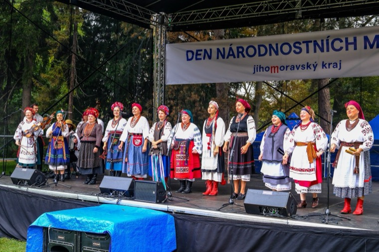

Staroukrajinské Vánoce
Koledy a ščedrivky s vánoční hvězdou. Sváteční program, který každoročně uvádíme v Brně a ve Vídni.
Autentický vícehlasý zpěv a živá lidová hudba z různých regionů Ukrajiny.

Vystupovali jsme mimo jiné
O nás
Ukrajinský folklorní soubor Kupava vznikl v únoru 2023 v Brně za podpory Ukrajinského centra v Brně. Věnujeme se tradičnímu ukrajinskému vícehlasému zpěvu a lidové hudbě z různých regionů Ukrajiny – zpíváme v originále, v krojích a za doprovodu živé hudby.
Soubor tvoří Ukrajinky dlouhodobě žijící v Česku, ženy, které musely odejít z Ukrajiny po ruské invazi v roce 2022, i Češi, kteří mají ukrajinský folklór rádi.
Umělecká vedoucíMgr. Kateryna Mykhaylova
Kupava je staré slovanské jméno – „krásná, slavnostně oblečená“ nebo „žena s ladnou a hrdou chůzí“.

Studujeme a uchováváme ukrajinské lidové písně, hudbu a tradiční kroje.
Přinášíme ukrajinský folklór na pódia festivalů, do koncertních sálů i kostelů.
Podporujeme setkávání a porozumění mezi ukrajinskou a českou kulturou.

Koncert pro život II
V dubnu 2025 vystoupila Kupava v Ostravě v přímém přenosu benefičního Koncertu pro život II na podporu Ukrajiny, který vysílala TV Noe. Na jednom pódiu spolu s Pavlem Helanem, kapelou Sonjašnyk se smyčcovým kvartetem a dětským sborem Spivanočky.
Repertoár

Koledy a ščedrivky s vánoční hvězdou. Sváteční program, který každoročně uvádíme v Brně a ve Vídni.

Lyrické, obřadní a taneční písně v autentickém vícehlasu s živou hudbou – pro festivaly, koncertní sály a kulturní události.
Vystoupení
Připravujeme
Celkem 46 vystoupení od roku 2023 – festivaly, koncerty a komunitní akce v Česku, na Slovensku a v Rakousku.
„Zaplněný kostel v Brně si užil atmosféru staroukrajinských Vánoc.“ČTK / České noviny, 5. 1. 2025
Video
Ой, устану ранесенькоBabylonfest, Brno 2023
Славен єсиUkrajinské koledy
Зеленеє жито, зеленеBabylonfest, Brno 2023
Kontakt
Máte zájem o vystoupení souboru Kupava nebo o bližší informace? Kontaktujte nás.